Develop a structured assortment system using AI-assisted analysis
Project Overview
Develop a structured assortment system using AI-assisted analysis. Identify assortment gaps and category opportunities. Generate a proposed product concept aligned with trend research.
Objectives
Create an assortment system for Miu Miu. Analyze current category distribution to identify potential assortment gaps. Integrate trend research into proposed product opportunities. Generate AI visuals to represent proposed assortment concepts.
Industry Relevance
Assortment planning is one of the key processes in fashion buying and merchandising. AI tools are increasingly starting to be incorporated into fashion through product data and supporting product decisions. This project helps demonstrate how AI can help support assortment development in retail.
Data sources included current product listings from the Miu Miu website, luxury retailer platforms, runway collection references, and industry trend and merchandising reports.
Brand + Consumer Research
Miu Miu is a luxury fashion brand owned by the Prada Group that was founded in 1993 by Miuccia Prada, a well-known Italian fashion designer who is Prada's current creative director. Miu Miu is known for its youthful rebellion, femininity, and experimentation.
Positioning: Positioned as an experimental, high-end, and avant-garde luxury fashion brand. Offers more of a playful alternative to its sister brand, Prada. Experienced massive growth over recent years, grew out of niche status.
Core Identity: Playful, rebellious, and unrestrained alter ego to Prada. Challenges the traditional fashion norms. Unconventional expression of femininity.
The Miu Miu 'It Girl' represents a persona that embodies the essence of the brand. The current identity reflects a rebellious younger sister aesthetic that is innocent yet mischievous. Playful yet effortlessly stylish.
“The Miu Miu women are plural: they are a community, a multitude of women who recognize themselves in their own individuality.” — Benedetta Petruzzo
Cultural Identity: Represents fluid identity across age, gender, and culture. Embraces diversity in representation. Encourages consumers to reject conventional societal norms.
Trend + Assortment Research
Miu Miu's core categories span Bags, Footwear, Ready-to-Wear, and Accessories. The SS26 Collection introduces Fashion Jewelry and Aprons alongside the existing core. Handbags range from Shoulder Bags, Totes, Hobo Bags, Mini Bags, and Backpacks to Top Handles. Footwear covers Ballerinas, Loafers & Lace-Ups, Sandals, Boots & Ankle Boots, Sneakers, and Pumps.
Accessories include Pouches, Hats, Hair Accessories, Bag Accessories & Keychains, Scarves & Gloves, Belts, Eyewear, and Fragrances.
Consumers are increasingly drawn to playful and expressive design as a response to stress and uncertainty happening in the real world. Joy-driven creativity is shaping product aesthetics and encouraging bold and imaginative styling.
Return of vintage-inspired silhouettes. Revival of classic outerwear shapes. Influence of youthful nostalgia and retro styling. Increasing growth of bold, vintage-inspired jewelry. Emphasis on statement necklaces and decorative elements.
Fur trims and tactile textures continue to gain momentum across luxury collections. Fur details continue to be featured in recent runways showing the trend's continuous growth. 'It' status confirmed for the year ahead.
Minimal designs with playful details. Use of asymmetry, surreal elements, and unexpected shapes. Emphasis on visual contrast and expressive styling.
Brands maintain structured assortments across different core categories. A balance in categories ensures a mix of seasonal, statement, and core items. Accessories and handbags normally represent high SKU diversity within luxury assortments.
Strong assortment planning prevents uncontrolled product inventory and reduces repetitive product offerings. Accessories typically make up 20% of the overall assortment for luxury brands.
Data Analysis
SKU data was collected from the Miu Miu website. Category totals were counted, recorded, and organized into tables. Microsoft Excel was used to calculate SKU totals and percentages. The total assortment of 716 SKUs was analyzed across 4 core categories to identify gaps and inform proposed assortment rules.
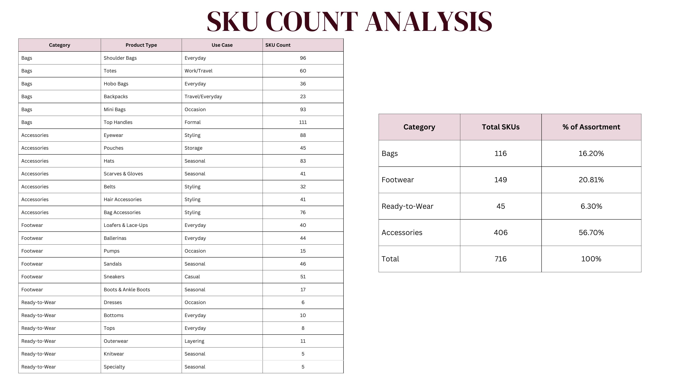
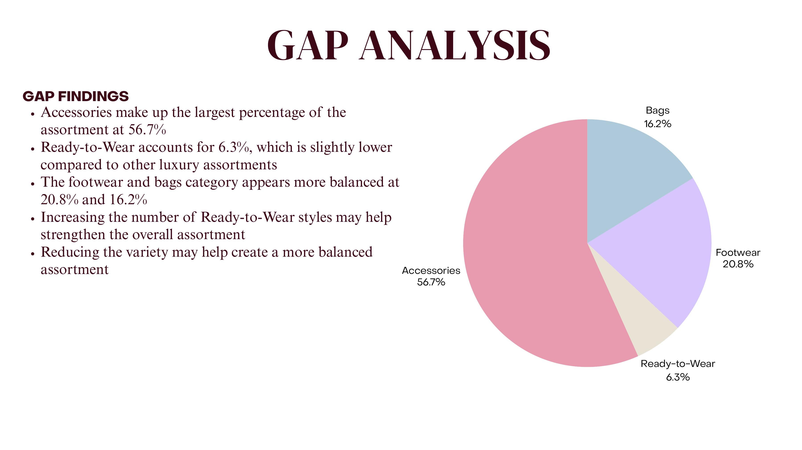
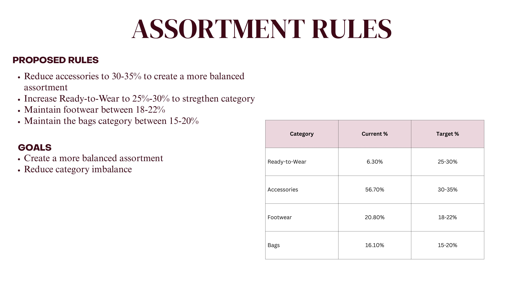
AI Assortment Development
AI was used to analyze category balance and identify assortment gaps, suggest percentage adjustments, conduct gap analysis, generate product visuals aligned with trend research and brand identity, generate a balanced assortment plan, and create structured tables to organize assortment data.
The final assortment reflects the proposed assortment rules: a rebalanced category distribution with increased Ready-to-Wear representation and reduced Accessories dominance, while maintaining Miu Miu's playful, rebellious design DNA across all product types.
| Category | Product Type | Style Name | Material | Colors | Size Range | SKU Count |
|---|---|---|---|---|---|---|
| Ready-to-Wear | Cropped Blazers | Collegiate Cropped Blazer | Wool gabardine / tweed / wool-cashmere blend | Navy, Camel, Blush Pink, Burgundy | 36–50 | 14 |
| Ready-to-Wear | Pleated Skirts (Asymmetric) | Deconstructed Pleated Skirt | Wool twill / cotton gabardine / silk-blend faille | Forest Green, Ivory, Chocolate Brown, Powder Blue | 36–50 | 16 |
| Ready-to-Wear | Fur-Trim Cardigans | Soft Edge Fur Cardigan | Cashmere / mohair blend with faux fur trim | Ivory, Blush Pink, Butter Yellow | 36–50 | 12 |
| Ready-to-Wear | Asymmetric Dresses | Fluid Asymmetry Dress | Silk crepe / silk satin / lightweight wool | Navy, Powder Blue, Cherry Red | 36–50 | 18 |
| Ready-to-Wear | Retro A-Line Coats | Heritage A-Line Coat | Wool felt / double-face wool / wool-cashmere | Camel, Chocolate Brown, Forest Green | 36–50 | 25 |
| Footwear | Chunky Loafers | Platform Penny Loafer | Polished leather / brushed leather / suede | Black, Chocolate Brown, Burgundy | 34–42 | 85 |
| Footwear | Multi-Strap Mary Janes | Triple Strap Mary Jane | Patent leather / suede / leather with shearling | Cherry Red, Black, Powder Blue | 34–42 | 80 |
| Bags | Doctor Bags | Classic Frame Doctor Bag | Structured leather / grained leather / suede | Chocolate Brown, Burgundy, Camel | One Size | 50 |
| Bags | Micro Bags with Charms | Charm Mini Top Handle | Smooth leather / patent leather / mixed materials | Blush Pink, Powder Blue, Metallic Gold | One Size | 45 |
| Bags | Statement Evening Bags | Jewel Box Evening Bag | Satin / embellished silk / metallic leather | Metallic Gold, Cherry Red, Black | One Size | 50 |
| Accessories | Statement Necklaces | Vintage Charm Collar | Gold-plated metal / resin / enamel / crystals | Gold, Ivory, Cherry Red | One Size | 90 |
| Accessories | Asymmetric Earrings | Mismatch Drop Earrings | Gold-plated metal / pearls / enamel | Gold, Blush Pink, Burgundy | One Size | 80 |
| Accessories | Silk Scarves | Heritage Print Silk Scarf | Printed silk twill / silk satin | Ivory/Red Print, Navy/Gold Print, Powder Blue Floral | One Size | 75 |
| Accessories | Decorative Belts | Sculpted Buckle Belt | Leather / suede / metal hardware | Black, Chocolate Brown, Burgundy | One Size | 75 |
All product visuals were generated using AI image generation tools, with prompts engineered to align with Miu Miu's brand identity and the Gilded Mischief F/W 27' trend direction.
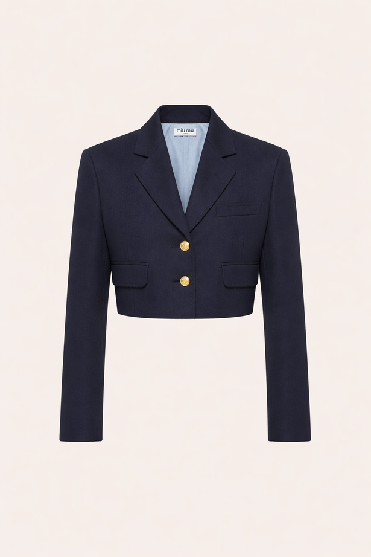
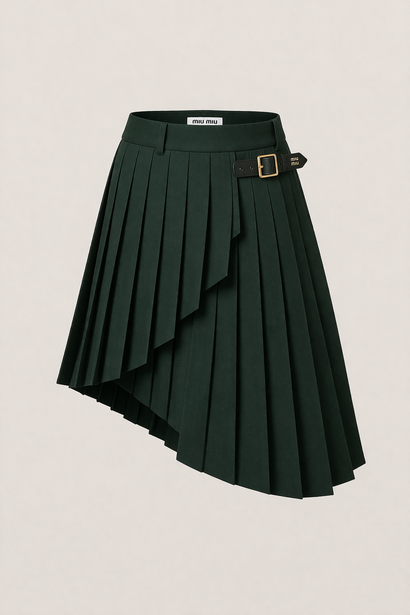
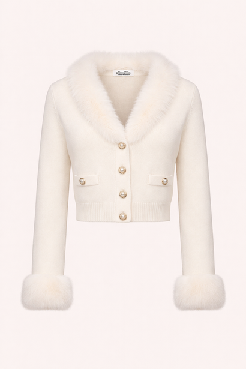
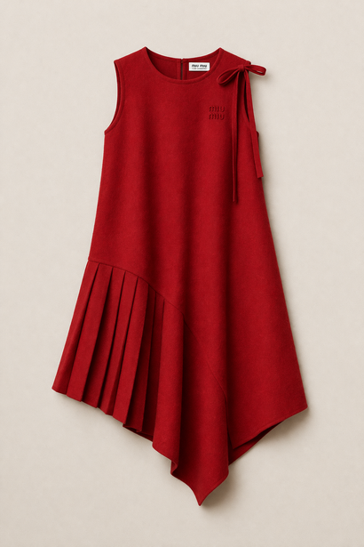
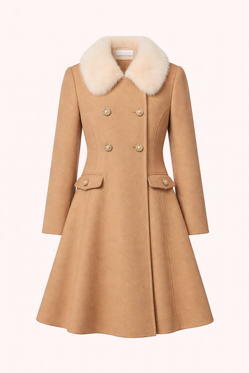
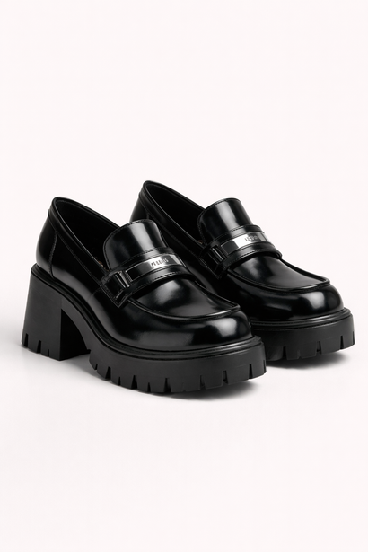
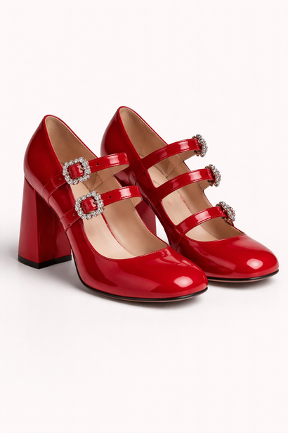
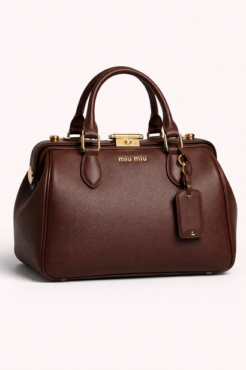
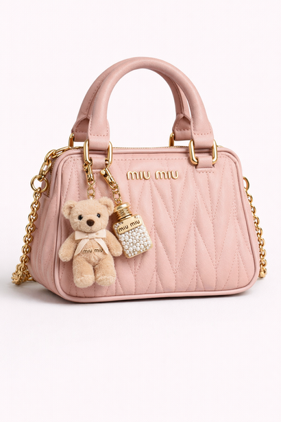
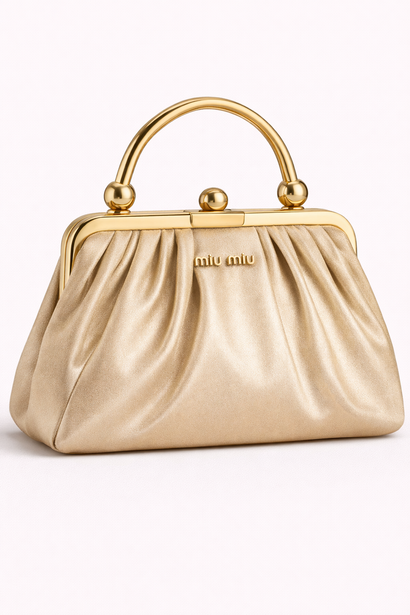
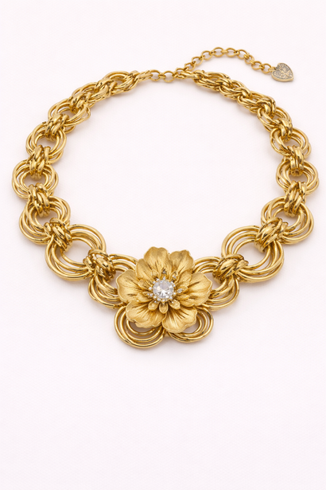
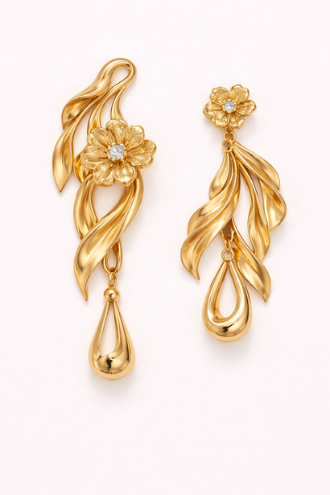
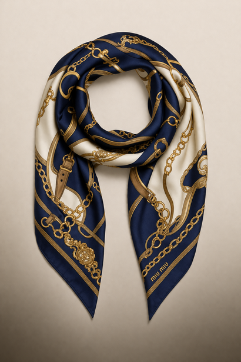
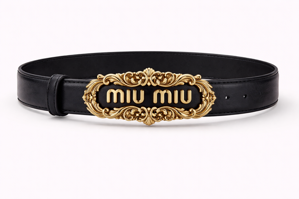
Process + Implementation
SKU data was collected from the Miu Miu website. Category totals were counted, recorded, and organized into tables. Microsoft Excel was used to calculate SKU totals and percentages. Trends were found through WGSN.
Referenced Miu Miu's old collections and products to ensure accurate product outputs. Personal judgment was used to evaluate AI outputs and select final results. Revised prompting to refine outputs until ideal inputs were generated.
SKU data was collected from the Miu Miu website. Category totals were counted, recorded, and organized into tables. Microsoft Excel was used to calculate SKU totals and percentages.
Trends were found through WGSN, runway collection references, and industry merchandising reports. Four key trend drivers were identified: Strategic Joy, Retro Nostalgic Revival, Material Direction (Fur), and Playful Simplicity.
Reflection
AI successfully identified assortment gaps and category imbalances. It generated relevant insights in responses without subjective information. AI-generated visuals and product suggestions aligned with trend research. It offered realistic percentage changes to balance the assortment.
“Prompt engineering is crucial to achieving accurate outputs. The user's own personal judgment is essential when making final decisions. Outputs require constant monitoring from the user.”
Challenges: Managing SKU data requires strategies and careful organization to ensure accurate category counts. Determining which AI outputs are aligned with Miu Miu's brand identity. Maintaining visual consistency across products.
Industry Impact: AI-assisted assortment planning can help brands identify gaps and improve category imbalances. Can help prevent missed opportunities and make inventory planning more efficient.
Ethics: User judgment was used for all final decisions. AI outputs were closely monitored and reviewed to ensure alignment with Miu Miu's brand identity and merchandising goals.
Limitations: AI sometimes produced products that didn't align with Miu Miu's brand identity. Produced overly decorative or unrealistic outputs. AI occasionally generated repetitive designs.
AI Strengths
Challenges
Key Takeaways
AI is effective when identifying assortment gaps and imbalances. Image outputs are more successful with detailed prompts. AI-assisted assortment planning can help brands identify gaps and improve category imbalances.
Keywords
References
Testa, J. (2024). The Most Wanted 'Girl' in Fashion. The New York Times. nytimes.com
Zargani, L. (2020). Women's Empowerment, Diversity Cornerstones of Miu Miu Brand. Women's Wear Daily.
Heart, L. (2025). MIU MIU: Street Style at the FW25 Show. Rebelle Magazine.
Sanderson, R. (2024). The Strategy Behind Miu Miu's Explosive Growth. Business of Fashion.
Luxury Fashion Market Size, Share, Growth. (2026). Market Reports World.
Luxury Fashion Market. (2025). Dimension Market Research.
Parisi, D. (2019). How Luxury Brands Rely on Accessories to Drive Revenue. Glossy.
Ewen, L. (2025). Miu Miu Overtakes Loewe to Become World's Top Fashion Brand. Fashion Dive.
Atwal, G. (2025). What Luxury Brands Can Learn From Hottest Brand Miu Miu. The Robin Report.
Guilbault, L. (2024). Miu Miu's Secret Sauce. Vogue.
Berg, A. et al. (2023). Rethinking Luxury's Distribution Strategy. Business of Fashion.
Balchandani, A. et al. (2025). The State of Luxury: How to Navigate a Slowdown. McKinsey.
Maggioni, S. (2024). Womenswear Forecast S/S 26: Playful Paradox. WGSN.
Asare, B. (2026). In 2026, Everything is Coming Up Fur-Trimmed. Coveteur.
Napoli, C., White, L., & Lim, N. (2025). Future Consumer 2027: Emotions. WGSN.
Retro Revival: How the Vintage Aesthetic is Driving Modern Marketing. (2025). BecauseofMarketing.
ChatGPT. OpenAI. chatgpt.com